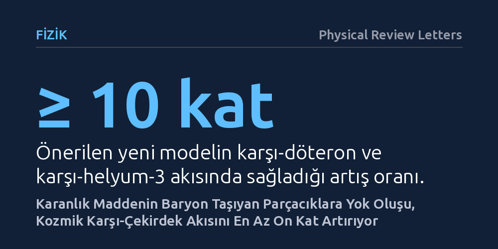

FIZIK · Physical Review Letters · 2026-10-24
Araştırmacılar, uzaydaki AMS dedektörünün yakaladığı gizemli karşı-çekirdek sinyallerinin karanlık maddeyle açıklanıp açıklanamayacağını inceledi. Baryon ve lepton sayısı taşıyan yeni parçacık modellerinin, karşı-döteron ve karşı-helyum akısını en az on kat artırarak bu gözlemleri açıklayabildiği gösterildi.
Uzayda tespit edilen nadir karşı-madde çekirdeklerinin, evrenin en büyük gizemi olan karanlık maddenin doğrudan ilk fiziksel kanıtı olabileceğini gösterir.

Evrenin kütlesinin yaklaşık yüzde seksen beşini oluşturan karanlık madde, ışık yaymadığı ve bilinen maddeyle neredeyse hiç etkileşmediği için doğrudan görülemiyor. Astrofizikçiler bu görünmez kütleyi saptayabilmek amacıyla, karanlık madde parçacıklarının uzayın derinliklerinde birbirleriyle çarpışıp yok olduklarında ortaya çıkarabilecekleri ikincil izleri arıyor. Kozmik ışınlar arasında normal şartlarda son derece nadir üretilen karşı-döteron ve karşı-helyum gibi hafif karşı-çekirdekler, bu tür bir yok oluşun en temiz parmak izi kabul ediliyor.
Uluslararası Uzay İstasyonu'nda görev yapan Alfa Manyetik Spektrometresi (AMS-02), son yıllarda uzaydan gelen bu tür birkaç karşı-çekirdek sinyali yakaladığını bildirdi. Ancak fizikçilerin elindeki standart karanlık madde modelleri, uzayda gözlemlenebilir miktarda karşı-helyum üretemiyor; karşı-döteron sayısını ise dedektörde en fazla bir adet civarında öngörüyor. Ortadaki bu uyumsuzluk, ya dedektörün arka plan gürültüsünü yanlış yorumladığına ya da bilinen parçacık fiziği modellerinin karanlık maddeyi açıklamakta yetersiz kaldığına işaret ediyor.
Bu açmazı çözmek isteyen araştırmacılar, Büyük Birleşik Kuramlardan esinlenen yeni bir kuramsal parçacık sınıfı önerdi. Standart modellerde karanlık madde parçacıkları doğrudan bilinen kuarklara veya bozonlara dönüşürken, bu yeni yaklaşımda karanlık madde önce hem baryon hem de lepton sayısı taşıyan varsayımsal ara parçacıklara yok oluyor. Bu ara parçacıklar daha sonra standart modeldeki bilinen parçacıklara bozunuyor.
Araştırmacılar, bu bozunum süreçlerini ve ardından gelen parçacık oluşumunu bilgisayar simülasyonlarıyla ayrıntılı şekilde inceledi. Normal koşullarda tek bir çarpışmada birden fazla karşıt-parçacığın bir araya gelip çekirdek oluşturması istatistiksel olarak çok düşük bir ihtimalken, baryon sayısı taşıyan bu ara parçacıkların bozunması karşı-nükleonların birbirine uzay ve momentum bakımından çok daha yakın ortaya çıkmasını sağlıyor. Bu durum, hafif karşı-çekirdeklerin birleşme olasılığını belirgin biçimde artırıyor.
Geliştirilen simülasyonlar, yeni modelin karşı-döteron ve karşı-helyum-3 akılarını standart senaryolara kıyasla en az on kat artırabildiğini gösterdi. Parçacıkların taşıdığı baryon ve lepton sayıları arttıkça karşı-çekirdek üretim veriminin daha da yükseldiği belirlendi.
Elde edilen bu artış, AMS-02 deneyinin uzayda tespit ettiğini duyurduğu ön karşı-madde olaylarının sayısıyla uyumlu bir seviyeye ulaşıyor. Geleneksel modellerin gözlemlenebilir seviyenin çok altında kalacağını söylediği sinyaller, böylece kuramsal fizikte tutarlı bir çerçeveye oturtulmuş oluyor.
Bu çalışmanın ortaya koyduğu bulgular, uzayda görülen karşı-madde sinyallerinin bilinen astrofiziksel süreçlerle veya sıradan karanlık madde modelleriyle açıklanamayan yönlerine yeni bir kuramsal açıklama getiriyor. Eğer uzay istasyonunun yakaladığı sinyaller doğrulanırsa, karanlık maddenin doğası temel parçacıkların birleşik simetrileriyle doğrudan ilişkili olabilir.
Yine de sonuçları temkinli değerlendirmek gerekiyor. AMS dedektörünün bildirdiği karşı-helyum olayları henüz kesinleşmiş bir keşif statüsünde değil; bağımsız dedektörler ve yeni ölçümler tarafından doğrulanması gerekiyor. Ayrıca önerilen ara parçacıkların kütleleri ve etkileşimleri, parçacık hızlandırıcı deneylerinin getirdiği sınırlarla gelecekte daha kapsamlı şekilde test edilmelidir.